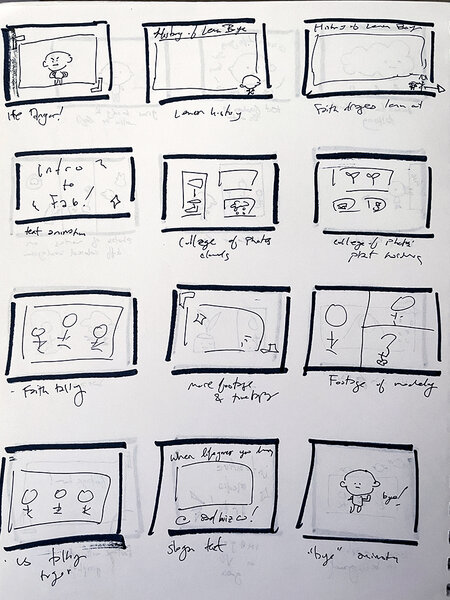
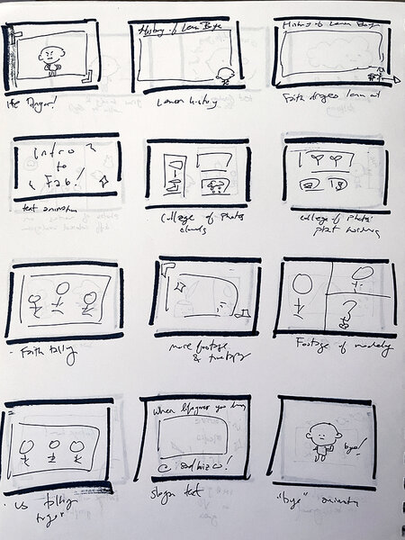

Sad Boiz Co. Crowdfunding Video
Crowdfunding video, Animation
A three minute video featuring 2D animated characters that shares the story of the shop Sad Boiz Co for a fake Kickstarter campaign.

CLOUD PIN AND EARRINGS & PUMPKIN EARRINGS
About the Project
Before the pandemic, I would sell laser cut jewelry at local art markets under the name Sad Boiz Co. with my friends. Now that I cannot sell in person and have lost my access to the laser cutter, I wanted to find a way I could continue making and selling jewlery. Since I have been doing polymer clay since fourth grade, I decided to use polymer clay for my new jewelry. Sunset Cherry Designs (SCD) is my online shop that has allowed me to continue creating and selling what I love. I wanted to establish a brand identity for SCD to help my store stand out online. I used Illustrator to design the SCD logo, creating the foundation of the brand.


RESEARCH BIBLE & MOODBOARD
Research
For SCD's branding, I wanted to keep it playful and simple to reflect the designs of the earrings and SCD's hope of bringing a pop of color into the audience's daily life. I also wanted to use colors from sunsets and cherries, such as reds, blues, and greens, to reinforce the name of the shop.
After playing around with different designs and typefaces, I decided on a simple cherry logo. The cherry shape is made of a single curvy navy blue line with two offset blobs of color to fill in the cherry leaf and fruit. The curvilinear line and offset color blobs keeps the design playful and carefree. For the typeface, I picked Basic Sans from Adobe Fonts because I think it is very clean and minimal, but it still has some subtle flares that match the branding.

CONCEPTUAL TREATMENT & SCRIPT
Storytelling
The earrings are made by rolling out slabs of polymer clay and cutting them out with 3D printed cutters. I fully partcipate in every step of this process by 3D modeling and printing the cutters as well as mixing each clay color and making each clay slab.
 

PAGES OF THE STORYBOARD
Production
The earrings are made by rolling out slabs of polymer clay and cutting them out with 3D printed cutters. I fully partcipate in every step of this process by 3D modeling and printing the cutters as well as mixing each clay color
ANIMATION COMPARISONS OF LIP-SYNCING WITH AND WITHOUT MOUTH RIGS
Animation
For his songwriting process, Defsoul arranges photo to create stories that inspires his songs. Since Def uses photography for storytelling, I wanted to add that into the Alone app.
There are two different story modes for the users to try out. The first is Def's Story where the photo order and elements of the exhibition design is predetermined and always the same. The second is Your Story where the photo order and elements of the exhibition design is completely randomized, so each time the exhibition will be different. This is to encourage users to create their own connections and stories with the photos.
Elements of the exhibition design includes scale of the media cubes, distance from camera the media cubes are placed, which face the media cube lands on, and the speed the media cubes are sent out.